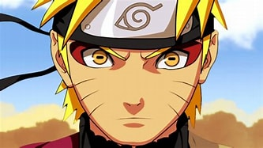
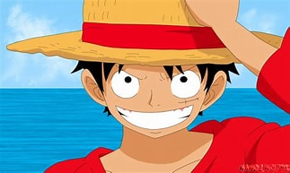
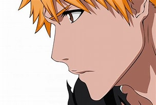

Naruto

Naruto is a manga series created by Masashi
Kishimoto that was serialized in Weekly Shonen
Jump.
Met with immediate popularity following
its initial publication in 1999, the series went
on to receive an anime adaptation that
commenced broadcasting in 2002. The manga concluded in 2014 with a total of 700 chapters.
The total number of print copies sold globally exceeds 250 million, and even now Naruto events, games, merchandise,
and more continue to be created and released for fans to enjoy—
a testament to the series’ enduring influence and popularity
around the world.
Luffy

Monkey D. Luffy, also known as "Straw Hat Luffy" and commonly as "Straw Hat", is the main protagonist of the manga and anime, One Piece. He is the founder and captain of the increasingly infamous and powerful Straw Hat Pirates, as well as the most powerful of its top fighters. He desires to find the legendary treasure left behind by the late Gol D. Roger and thereby become the Pirate King, which would help facilitate an unknown dream of his that he has told only to Shanks, his brothers and crew.He believes that being the Pirate King means having the most freedom in the world.
Ichigo

Ichigo's most distinguishing feature is his spiky orange hair, a trait he has been ridiculed about for years on end. He is a fairly tall, lean-built young man with peach skin and brown eyes. He likes to wear slim fitting clothes. He has a tendency to wear shirts patterned with the number 15 because his name is a homonym for the number.Since becoming a Shinigami, he has become noticeably more muscular, as noted by his sister Karin. When in his spiritual form, Ichigo wears the standard Shinigami shihakushō, with the addition of a strap across his chest.